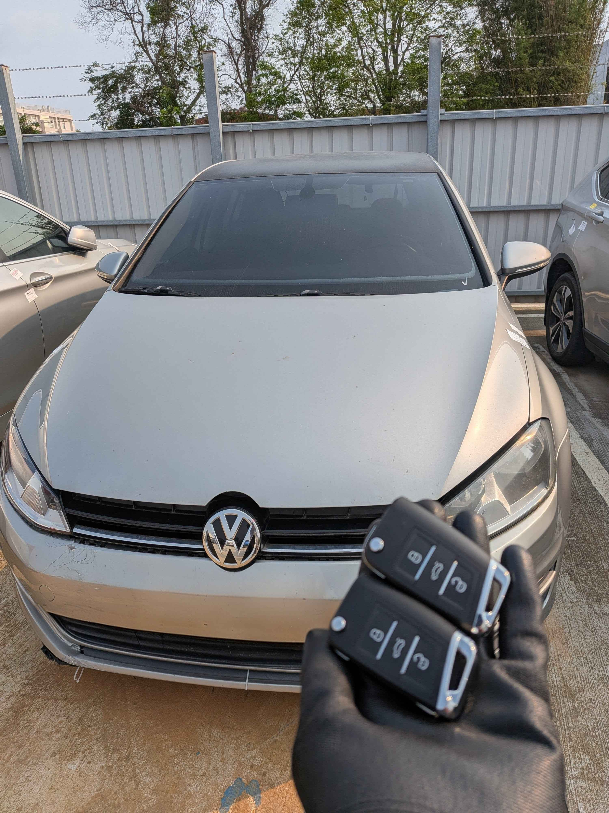

Field Report
2026.04.14
2015 VW Golf 7 MQB
智能鑰匙全丟：數據重構實錄
台中東區大型汽車拍賣場救援：攻克 JCI 儀表與同步數據計算瓶頸。

Mission Background
本次任務位於台中東區知名的車輛拍賣中心。一台 2015 年式的 VW Golf 7 代，因車主全丟 (All Keys Lost) 導致車輛鎖死無法發動。此案的困難點在於其搭載了 MQB 平台中的 JCI (Johnson Controls) 儀表，這在防盜數據的獲取上極具挑戰性。
PlatformMQB
ECUMED17.5.21
Location台中東區
StatusSuccess
Technical Execution
在 MQB 系統全丟的情況下，最核心的挑戰在於獲取 同步數據 (Sync Data)。由於 JCI 儀表無法直接透過 OBD 讀取安全數據，極致核心 ProCore 團隊採取了多重數據交叉驗證的策略。
- 儀表數據備份： 先行備份 IMMO 與 EEPROM 原始數據，確保操作安全性。
- ECU 數據讀取： 透過 Boot 模式成功讀取 MED17.5.21 引擎電腦的全 CS 數據 (16 Bytes)。
- 數據合成運算： 利用獲取的 ECU CS 碼與儀表 IMMO 數據，與雲端伺服器同步進行非對稱加密計算，產出專屬的同步數據。
- 鑰匙生成與學習： 成功製作兩把全新智能感應鑰匙，並現地完成 OBD 匹配學習。
整個救援過程在拍賣現場完成，無需拖車、無需更換任何模組，僅用時約 1.5 小時即恢復車輛動能。